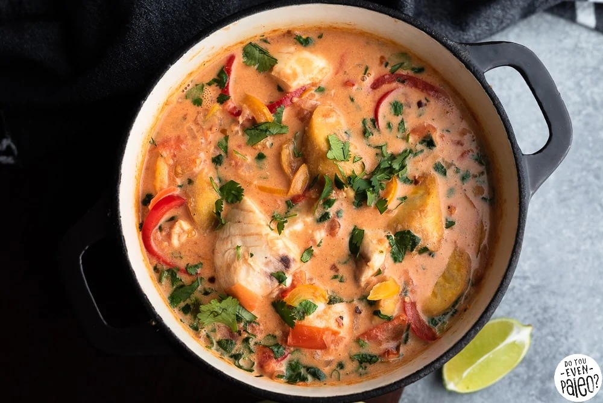

Brazilian Fish Stew

Brazilian Fish Stew (Moqueca)
Moqueca is a stew, usually based on fish and/or seafood, seasoned with various herbs and peppers. Moqueca is a dish that uniquely expresses the various cultures that formed the Brazilian people. Its origin is the result of indigenous, African, and Portuguese influences, mixing techniques and ingredients from several continents in an authentically national dish.
There are two types of Moqueca in Brazil from two different states in Brazil. One is from Bahia (in the northeast of the country) called Moqueca Baiana. The other one is from Espirito Santo (in southeastern Brazil) called Moqueca Capixaba. The difference between them is the Moqueca Baiana uses palm oil and coconut milk and Moqueca Capixaba uses olive oil and tomato broth.
Ingredients
- 1 lb Cod fish (or other firm white fish), rinsed and pin bones removed
- 2 Tbsp Lime juice
- 3Tbsp Olive oil divided
- 3 Garlic cloves minced
- 1 C Diced tomatoes
- 2 Bell peppers sliced (colors optional)
- 1 Medium white or yellow onion sliced
- 1 Small bunch of cilantro chopped
- 14 oz Coconut Milk
- 1 1/2 tbsp Tomato paste
Instructions
- Season fish with salt, pepper, and lime juice. Allow at least 15 minutes to marinate before cooking.
- Heat 2 Tbsp of olive oil in a large Duthch oven (or clay pot) over medium heat.
- Add garlic and cook for 1-2 minutes, until fragrant.
- Spread diced tomatoes to cover the bottom of the pot.
- Add bell peppers and sliced onion.
- Add fish filles and top with cilantro.
- Pour in the coconut milk and tomato paste. Bring to a boil over medium-high heat. Cover, lower heat, and simmer for 15 minutes.
- Add salt and/or pepper to taste. Serve with rice.